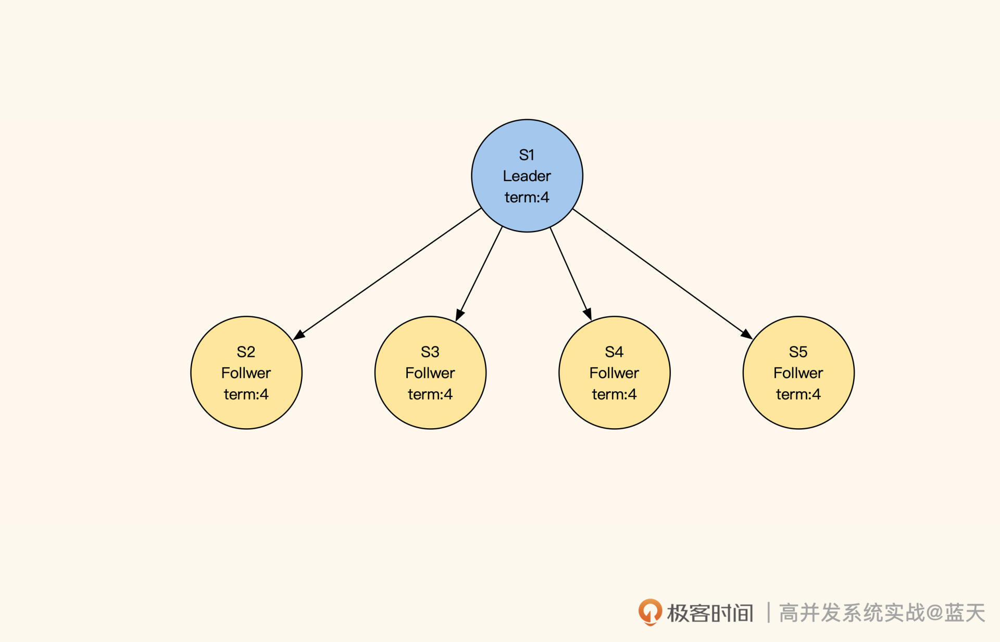
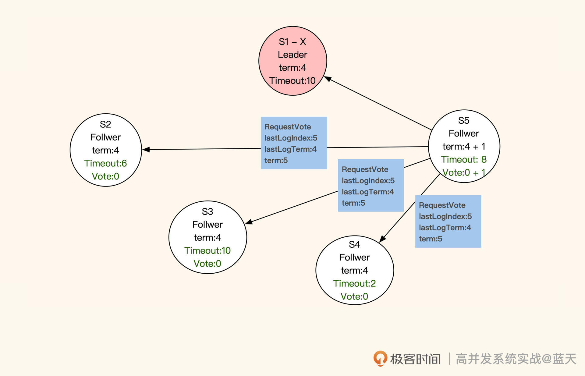
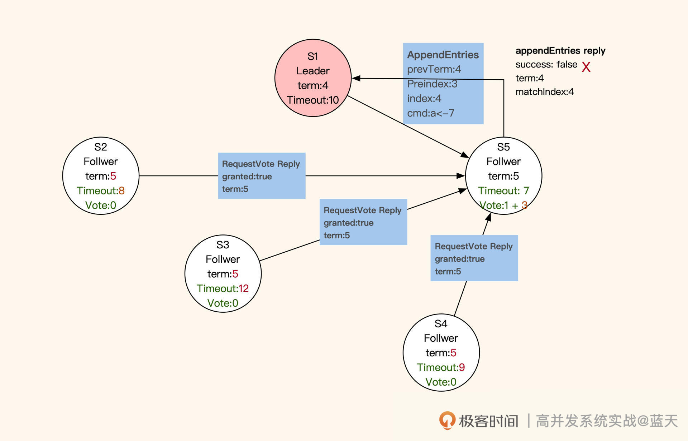
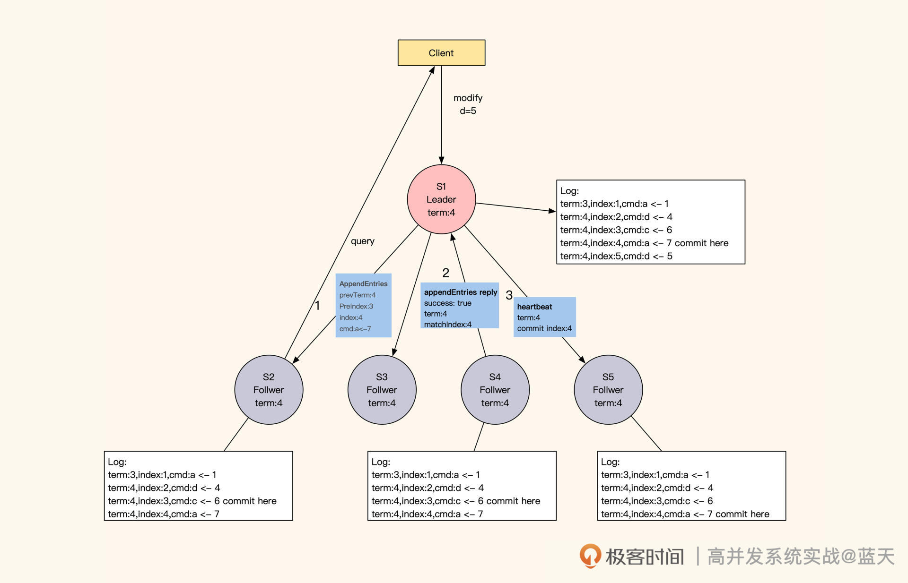
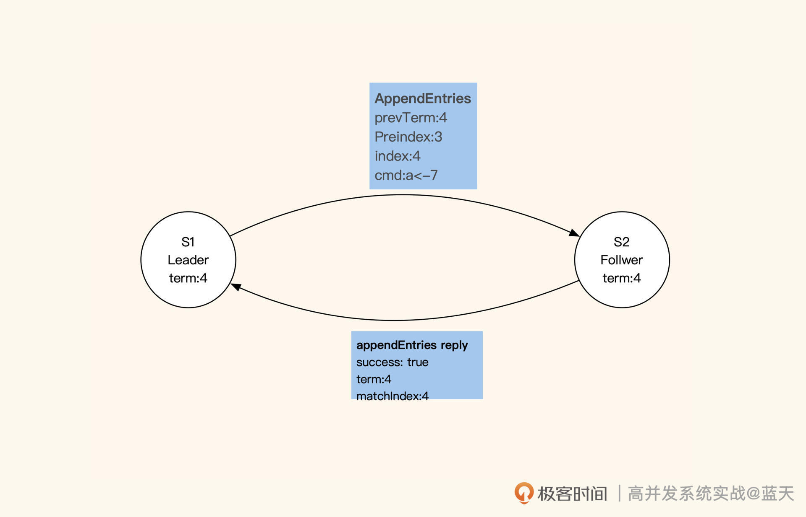
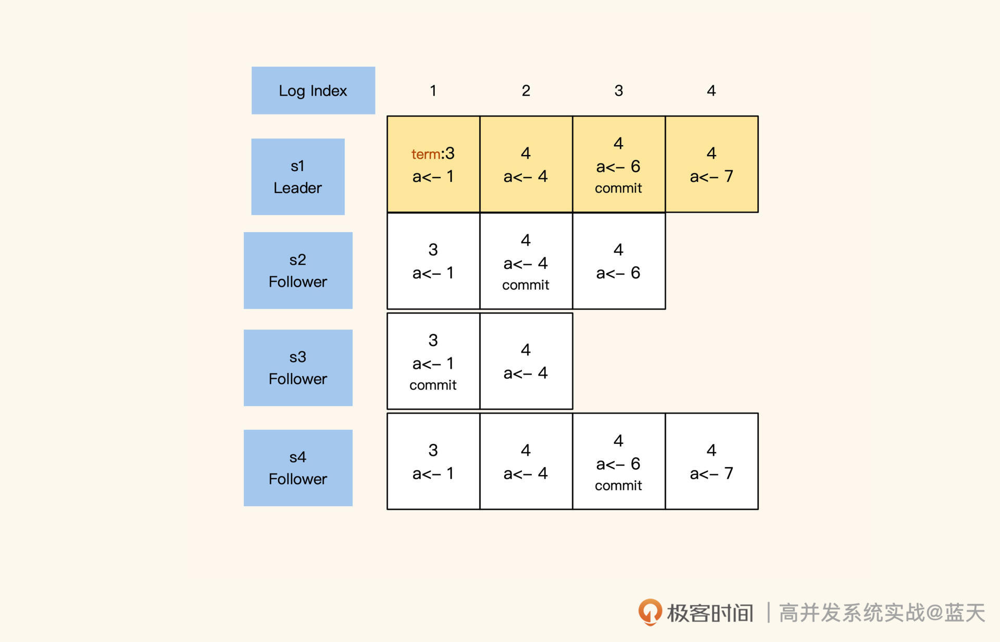
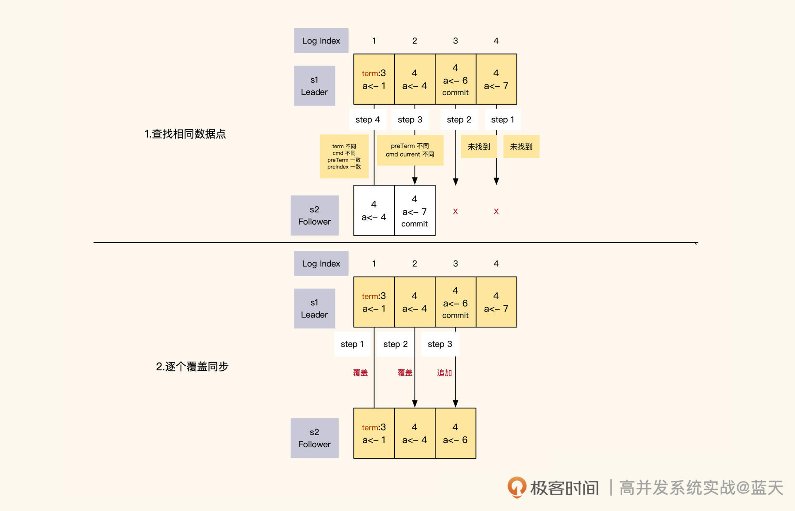
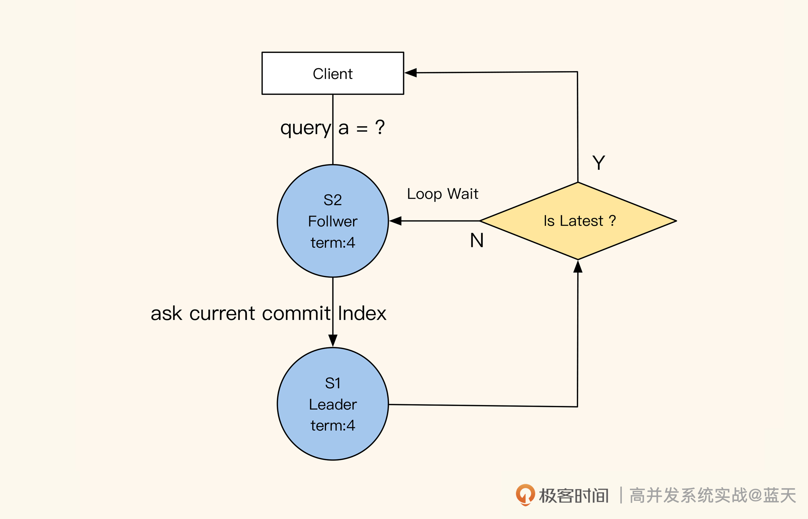
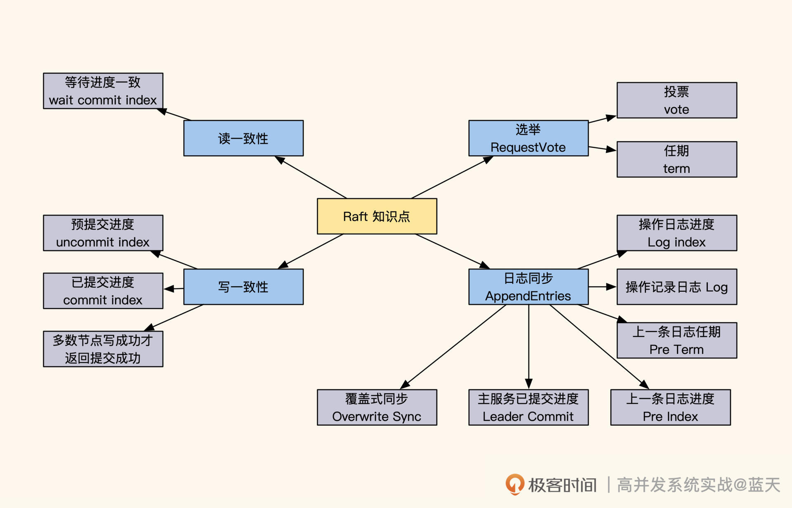

- 00 开篇词 高并发系统，技术实力的试金石.md.html
- 01 结构梳理：大并发下，你的数据库表可能成为性能隐患.md.html
- 02 缓存一致：读多写少时，如何解决数据更新缓存不同步？.md.html
- 03 Token：如何降低用户身份鉴权的流量压力？.md.html
- 04 同城双活：如何实现机房之间的数据同步？.md.html
- 05 共识Raft：如何保证多机房数据的一致性？.md.html
- 06 领域拆分：如何合理地拆分系统？.md.html
- 07 强一致锁：如何解决高并发下的库存争抢问题？.md.html
- 08 系统隔离：如何应对高并发流量冲击？.md.html
- 09 分布式事务：多服务的2PC、TCC都是怎么实现的？.md.html
- 10 稀疏索引：为什么高并发写不推荐关系数据库？.md.html
- 11 链路追踪：如何定制一个分布式链路跟踪系统 ？.md.html
- 12 引擎分片：Elasticsearch如何实现大数据检索？.md.html
- 13 实时统计：链路跟踪实时计算中的实用算法.md.html
- 14 跳数索引：后起新秀ClickHouse.md.html
- 15 实践方案：如何用C++自实现链路跟踪？.md.html
- 16 本地缓存：用本地缓存做服务会遇到哪些坑？.md.html
- 17 业务脚本：为什么说可编程订阅式缓存服务更有用？.md.html
- 18 流量拆分：如何通过架构设计缓解流量压力？.md.html
- 19 流量调度：DNS、全站加速及机房负载均衡.md.html
- 20 数据引擎：统一缓存数据平台.md.html
- 21 业务缓存：元数据服务如何实现？.md.html
- 22 存储成本：如何推算日志中心的实现成本？.md.html
- 23 网关编程：如何通过用户网关和缓存降低研发成本？.md.html
- 24 性能压测：压测不完善，效果减一半.md.html
- 答疑课堂 思考题答案（一）.md.html
- 结束语 为者常成，行者常至.md.html
- 捐赠
05 共识Raft：如何保证多机房数据的一致性？
你好，我是徐长龙。
上节课我们讲了如何通过Otter实现同城双活机房的数据库同步，但是这种方式并不能保证双机房数据双主的事务强一致性。
如果机房A对某一条数据做了更改，B机房同时修改，Otter会用合并逻辑对冲突的数据行或字段做合并。为了避免类似问题，我们在上节课对客户端做了要求：用户客户端在一段时间内只能访问一个机房。
但如果业务对“事务+强一致”的要求极高，比如库存不允许超卖，那我们通常只有两种选择：一种是将服务做成本地服务，但这个方式并不适合所有业务；另一种是采用多机房，但需要用分布式强一致算法保证多个副本的一致性。
在行业里，最知名的分布式强一致算法要属Paxos，但它的原理过于抽象，在使用过程中经过多次修改会和原设计产生很大偏离，这让很多人不确定自己的修改是不是合理的。而且，很多人需要一到两年的实践经验才能彻底掌握这个算法。
随着我们对分布式多副本同步的需求增多，过于笼统的Paxos已经不能满足市场需要，于是，Raft算法诞生了。
相比Paxos，Raft不仅更容易理解，还能保证数据操作的顺序，因此在分布式数据服务中被广泛使用，像etcd、Kafka这些知名的基础组件都是用Raft算法实现的。
那今天这节课我们就来探寻一下Raft的实现原理，可以说了解了Raft，就相当于了解了分布式强一致性数据服务的半壁江山。几乎所有关于多个数据服务节点的选举、数据更新和同步都是采用类似的方式实现的，只是针对不同的场景和应用做了一些调整。
如何选举Leader？
为了帮你快速熟悉Raft的实现原理，下面我会基于 Raft官方的例子，对Raft进行讲解。

如图所示，我们启动五个Raft分布式数据服务：S1、S2、S3、S4、S5，每个节点都有以下三种状态：
- Leader：负责数据修改，主动同步修改变更给Follower；
- Follower：接收Leader推送的变更数据；
- Candidate：集群中如果没有Leader，那么进入选举模式。
如果集群中的Follower节点在指定时间内没有收到Leader的心跳，那就代表Leader损坏，集群无法更新数据。这时候Follower会进入选举模式，在多个Follower中选出一个Leader，保证一组服务中一直存在一个Leader，同时确保数据修改拥有唯一的决策进程。
那Leader服务是如何选举出来的呢？进入选举模式后，这5个服务会随机等待一段时间。等待时间一到，当前服务先投自己一票，并对当前的任期“term”加 1 （上图中term:4就代表第四任Leader），然后对其他服务发送RequestVote RPC（即请求投票）进行拉票。

收到投票申请的服务，并且申请服务（即“发送投票申请的服务”）的任期和同步进度都比它超前或相同，那么它就会投申请服务一票，并把当前的任期更新成最新的任期。同时，这个收到投票申请的服务不再发起投票，会等待其他服务邀请。
注意，每个服务在同一任期内只投票一次。如果所有服务都没有获取到多数票（三分之二以上服务节点的投票），就会等当前选举超时后，对任期加1，再次进行选举。最终，获取多数票且最先结束选举倒计时的服务会被选为Leader。
被选为Leader的服务会发布广播通知其他服务，并向其他服务同步新的任期和其进度情况。同时，新任Leader会在任职期间周期性发送心跳，保证各个子服务（Follwer）不会因为超时而切换到选举模式。在选举期间，若有服务收到上一任Leader的心跳，则会拒绝（如下图S1）。

选举结束后，所有服务都进入数据同步状态。
如何保证多副本写一致？
在数据同步期间，Follower会与Leader的日志完全保持一致。不难看出，Raft算法采用的也是主从方式同步，只不过Leader不是固定的服务，而是被选举出来的。
这样当个别节点出现故障时，是不会影响整体服务的。不过，这种机制也有缺点：如果Leader失联，那么整体服务会有一段时间忙于选举，而无法提供数据服务。
通常来说，客户端的数据修改请求都会发送到Leader节点（如下图S1）进行统一决策，如果客户端请求发送到了Follower，Follower就会将请求重定向到Leader。那么，Raft是怎么实现同分区数据备份副本的强一致性呢？
- 具体来讲，Leader成功修改数据后，会产生对应的日志，然后Leader会给所有Follower发送单条日志同步信息。只要大多数Follower返回同步成功，Leader就会对预提交的日志进行commit，并向客户端返回修改成功。
接着，Leader在下一次心跳时（消息中leader commit字段），会把当前最新commit的Log index（日志进度）告知给各Follower节点，然后各Follower按照这个index进度对外提供数据，未被Leader最终commit的数据则不会落地对外展示。
如果在数据同步期间，客户端还有其他的数据修改请求发到Leader，那么这些请求会排队，因为这时候的Leader在阻塞等待其他节点回应。

不过，这种阻塞等待的设计也让Raft算法对网络性能的依赖很大，因为每次修改都要并发请求多个节点，等待大部分节点成功同步的结果。
最惨的情况是，返回的RTT会按照最慢的网络服务响应耗时（“两地三中心”的一次同步时间为100ms左右），再加上主节点只有一个，一组Raft的服务性能是有上限的。对此，我们可以减少数据量并对数据做切片，提高整体集群的数据修改性能。
请你注意，当大多数Follower与Leader同步的日志进度差异过大时，数据变更请求会处于等待状态，直到一半以上的Follower与Leader的进度一致，才会返回变更成功。当然，这种情况比较少见。
服务之间如何同步日志进度？
讲到这我们不难看出，在Raft的数据同步机制中，日志发挥着重要的作用。在同步数据时，Raft采用的日志是一个有顺序的指令日志WAL（Write Ahead Log），类似MySQL的binlog。该日志中记录着每次修改数据的指令和修改任期，并通过Log Index标注了当前是第几条日志，以此作为同步进度的依据。

其中，Leader的日志永远不会删除，所有的Follower都会保持和Leader 完全一致，如果存在差异也会被强制覆盖。同时，每个日志都有“写入”和“commit”两个阶段，在选举时，每个服务会根据还未commit的Log Index进度，优先选择同步进度最大的节点，以此保证选举出的Leader拥有最新最全的数据。
Leader在任期内向各节点发送同步请求，其实就是按顺序向各节点推送一条条日志。如果Leader同步的进度比Follower超前，Follower就会拒绝本次同步。
Leader收到拒绝后，会从后往前一条条找出日志中还未同步的部分或者有差异的部分，然后开始一个个往后覆盖实现同步。

Leader和Follower的日志同步进度是通过日志index来确认的。Leader对日志内容和顺序有绝对的决策权，当它发现自己的日志和Follower的日志有差异时，为了确保多个副本的数据是完全一致的，它会强制覆盖Follower的日志。
那么Leader是怎么识别出Follower的日志与自己的日志有没有差异呢？实际上，Leader给Follower同步日志的时候，会同时带上Leader上一条日志的任期和索引号，与Follower当前的同步进度进行对比。
对比分为两个方面：一方面是对比Leader和Follower当前日志中的index、多条操作日志和任期；另一方面是对比Leader和Follower上一条日志的index和任期。
如果有任意一个不同，那么Leader就认为Follower的日志与自己的日志不一致，这时候Leader会一条条倒序往回对比，直到找到日志内容和任期完全一致的index，然后从这个index开始正序向下覆盖。同时，在日志数据同步期间，Leader只会commit其所在任期内的数据，过往任期的数据完全靠日志同步倒序追回。
你应该已经发现了，这样一条条推送同步有些缓慢，效率不高，这导致Raft对新启动的服务不是很友好。所以Leader会定期打快照，通过快照合并之前修改日志的记录，来降低修改日志的大小。而同步进度差距过大的Follower会从Leader最新的快照中恢复数据，按快照最后的index追赶进度。
如何保证读取数据的强一致性？
通过前面的讲解，我们知道了Leader和Follower之间是如何做到数据同步的，那从Follower的角度来看，它又是怎么保证自己对外提供的数据是最新的呢？
这里有个小技巧，就是Follower在收到查询请求时，会顺便问一下Leader当前最新commit的log index是什么。如果这个log index大于当前Follower同步的进度，就说明Follower的本地数据不是最新的，这时候Follower就会从Leader获取最新的数据返回给客户端。可见，保证数据强一致性的代价很大。

你可能会好奇：如何在业务使用时保证读取数据的强一致性呢？其实我们之前说的Raft同步等待Leader commit log index的机制，已经确保了这一点。我们只需要向Leader正常提交数据修改的操作，Follower读取时拿到的就一定是最新的数据。
总结
很多人都说Raft是一个分布式一致性算法，但实际上Raft算法是一个共识算法（多个节点达成共识），它通过任期机制、随机时间和投票选举机制，实现了服务动态扩容及服务的高可用。
通过Raft采用强制顺序的日志同步实现多副本的数据强一致同步，如果我们用Raft算法实现用户的数据存储层，那么数据的存储和增删改查，都会具有跨机房的数据强一致性。这样一来，业务层就无需关心一致性问题，对数据直接操作，即可轻松实现多机房的强一致同步。
由于这种方式的同步代价和延迟都比较大，建议你尽量在数据量和修改量都比较小的场景内使用，行业里也有很多针对不同场景设计的库可以选择，如：parallel-raft、multi-paxos、SOFAJRaft等，更多请参考Raft的底部开源列表。

思考题
最后，请你思考一下，为什么Raft集群成员增减需要特殊去做？
欢迎你在留言区与我交流讨论，我们下节课见！
© 2019 - 2023 Liangliang Lee. Powered by gin and hexo-theme-book.